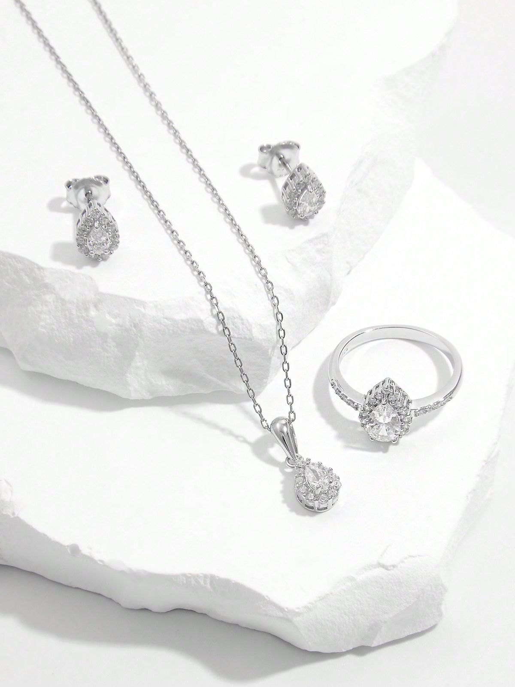
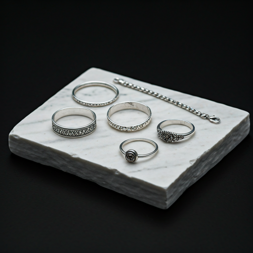
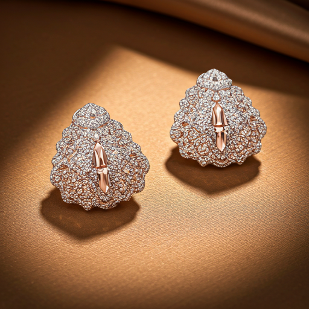
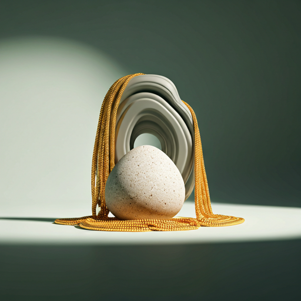
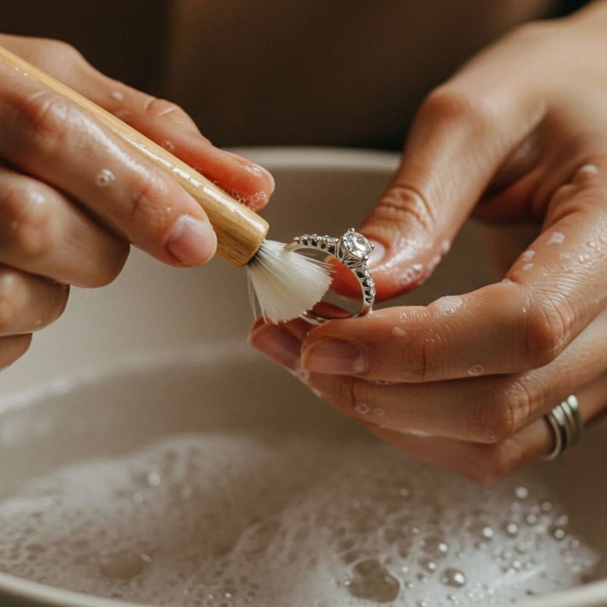

Keerikattu Jewellery – Best Silver Jewellery, Imitation Jewellery, Gold Covering Jewellery & Silver Polishing Shop in Thodupuzha, Kerala

Elegant Jewellery, For Every Occasion.
Beautiful jewellery for every occasion, crafted with quality and care. Discover premium silver jewellery, imitation jewellery, gold covering jewellery, bridal collections, fashion accessories, and professional silver polishing services at Keerikattu Jewellery, Thodupuzha.
Our Collections

Rings, chains, bangles, anklets, earrings and more.
Silver Jewellery Collection

Affordable jewellery for weddings, festivals and daily wear.
Imitation & Fashion Jewellery

Elegant one gram gold jewellery with premium finishing.
Gold Covering Jewellery

Professional Silver Polishing
Restore the original shine of your silver jewellery with our professional silver polishing and liquid silver plating services in Thodupuzha. We polish silver chains, rings, bangles, anklets, earrings and other silver ornaments using quality finishing techniques at affordable prices.
New Silver, Imitation & Gold Covering Jewellery Arrivals
Looking for the best jewellery shop in Thodupuzha? Keerikattu Jewellery offers affordable silver jewellery, imitation jewellery, one gram gold covering jewellery, bridal collections, daily wear jewellery, festive collections, silver gifts, anklets, bangles, chains, rings, earrings, pendants and trusted silver polishing services at customer-friendly prices.
About Keerikattu Jewellery
Keerikattu Jewellery is a trusted jewellery shop located on Temple Road, Thodupuzha, Kerala, offering an extensive collection of silver jewellery, imitation jewellery, one gram gold covering jewellery and fashion jewellery for women, men and children. We also provide professional silver polishing, liquid silver plating and jewellery care services to restore the shine of your treasured ornaments. Whether you are shopping for weddings, engagements, Onam, Vishu, Christmas, birthdays or everyday wear, our affordable collections combine quality, elegance and value. Our commitment to customer satisfaction, friendly service and beautiful craftsmanship has made Keerikattu Jewellery a preferred destination for jewellery lovers in and around Thodupuzha.
Visit Our Jewellery Store in Thodupuzha
Visit Keerikattu Jewellery on Temple Road, Thodupuzha to explore our latest collections of silver jewellery, imitation jewellery, one gram gold covering jewellery, bridal jewellery and fashion accessories. We also offer trusted silver polishing and liquid silver plating services. Our friendly team is always ready to help you find beautiful jewellery for weddings, festivals, gifts and everyday wear at affordable prices.
Keerikattu Jewellery Details
Business Name: Keerikattu Jewellery
Location: Temple Road, Thodupuzha, Idukki, Kerala
Specialties: Silver Jewellery, Imitation Jewellery, One Gram Gold Covering Jewellery, Silver Polishing, Liquid Silver Plating, Bridal Jewellery, Daily Wear Jewellery, Fashion Jewellery.
Serving customers across Thodupuzha, Idukki and nearby areas.